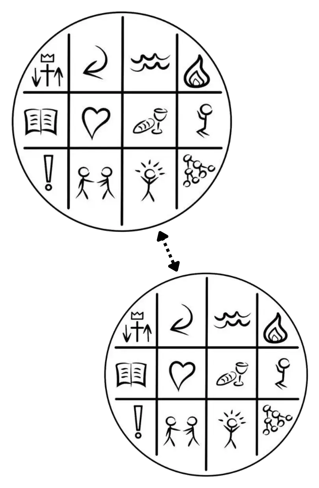
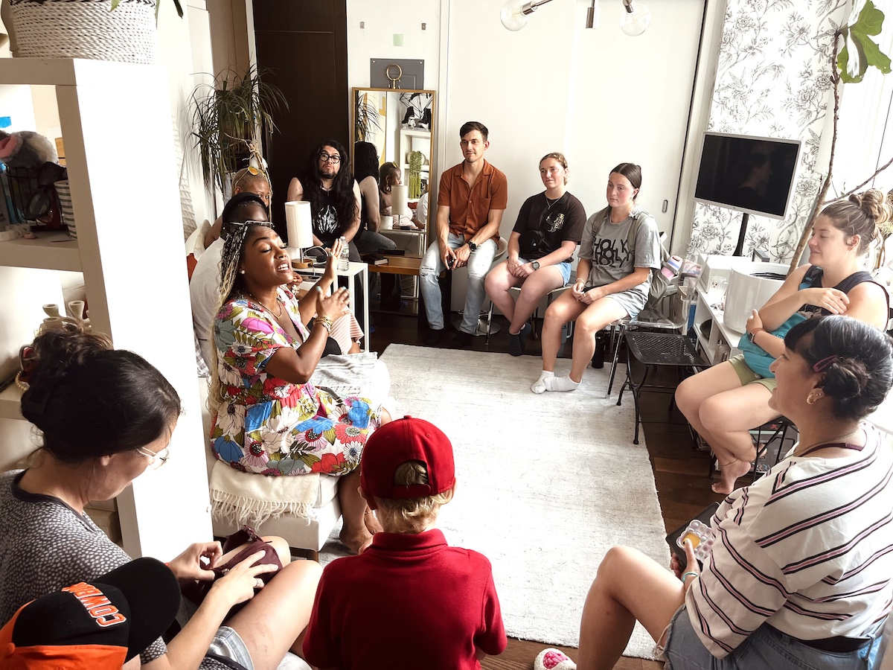

This is not just an online class. It is a simple church gathering with a training plan. Each person joins the gathering while also practicing the same rhythms in their own context.
Vision
Every people and every place reached through multiplying disciples, leaders, and churches.
2 Church Vision Cast: Join a multiplying DNA church and start a church as the training plan.

What We Will Practice
- Core Content: We will work through the waffle: commands, stories, and practices. Use the exact content from obey.tools and the CFC leadership tool.
- Follow and Fish Goals: Before each meeting, everyone shares their follow and fish goals in the chat.
- Fishing Tool: Everyone commits to using the Conversation Quadrant screenshot as a simple fishing tool and tracking mechanism.
- Simple Church Practice: Each person commits to starting a simple church in parallel with the online gathering.
Commitments
- PPPP Focus: Each person identifies their PPPP: passion, people, place, and profession.
- CFC Commitment: Each person commits to CFC: commitment, focus, and consistency through the 3-2-1 rhythm.
- Shoulder to Shoulder: Each person commits to shoulder-to-shoulder practice. In our case, this means joining for an in-person immersion. Nov 12 (5 PM CST) – Nov 15 (12 PM CST), 2026 in OKC or Spring 2027 in NYC.
Want to see this practiced in real life? Explore upcoming Covo Immersions.


Meeting Rhythm
- Thursdays
- 2 hours
- 12 weeks, then reassess for continued gathering.
WhatsApp Field Room
Start practicing with other disciple makers.
Online church is one piece. The field room is where the practice stays alive week to week. Join practitioners who are moving toward real people in real relationships right now.
Join the WhatsApp Field Room